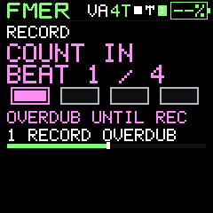

Examples
Practical workflows
From a standalone bass patch to a backed-up live set.
A standalone instrument
- Select a DEFAULT or USER sound by scrolling PRESETS across the banks.
- Edit its engine, envelope and effects.
- Save it into an instrument slot. Use USER for a personal working collection.
- Recall it once to verify the intended destination before disconnecting.
A four-part sketch
- Save four instruments and assign kick, snare, bass and lead to tracks 1–4.
- Record or hand-edit four patterns. Use ties for held notes and rests for silence.
- Mix in PERFORM, then queue variations at pattern boundaries.
- Save a project and make a complete unit backup when connected.
A portable library collection
- Capture useful instruments and projects into the companion Library.
- Name and tag them; collect a live set under one collection label.
- Export the selection. Include a complete unit backup if slot references must be preserved exactly.
- On another installation, import the catalog and deliberately assign destination slots.
Recover a mistake
For an immediate local edit, use its Undo. For a trashed item, use Recover. For a larger local change, restore an exported catalog or PC bank backup. Device writes are separate: inspect the retained pre-operation backup and restore plan, then explicitly restore the required data.


